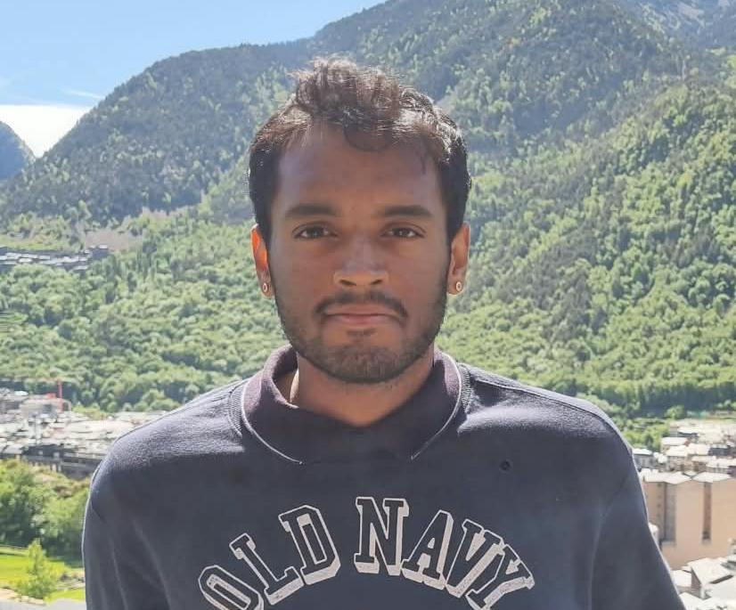

Quantitative Economist specializing in financial risk analytics, econometric modeling, credit decisioning logic, and applied machine learning[cite: 4]. Experienced in SQL database extraction, cash-flow and panel data analysis, risk-adjusted portfolio metrics, and statistical underwriting models[cite: 4].
Grade: 2.0 (Good) | Master's Thesis: Analyzed household investment behavior and financial commitment decisions using complex microdata panels from the Indonesian Family Life Survey (IFLS) (Grade: 1.8)[cite: 4]
Bachelor's Thesis: Investigated macroeconomic liquidity shocks and informal cash circulation anomalies using large-scale NSS expenditure microdata[cite: 4].
Brief summary of what this project accomplished, the problem it solved, and key technical highlights or results.
Brief summary of the architecture, workflow, dataset, or methodology associated with this work.